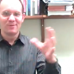

Recent and Upcoming EventsLoading Map…. Room 5307365 Fifth Avenue – New YorkDetails 40.7258593 -73.98687610000002 Date/Time Date(s) – 07/12/20114:15 pm – 5:30 pm Location Room 5307 Category(ies) No Categories THE COMMITTEE ON INTERDISCIPLINARY SCIENCE STUDIES PRESENTS TRACI WARKENTIN Odd Couples, Embodied Minds December 7th, 4:15-5:30 Room 5307 | The CUNY Graduate Center 365 Fifth Avenue, New York, NY [Read more...] Map Unavailable Date/Time Date(s) – 06/10/20116:00 pm – 8:00 pm Category(ies) No Categories THE COMMITTEE FOR INTERDISCIPLINARY SCIENCE STUDIES PRESENTS Part of the NeuroCultures: Lecture Series at the CUNY Graduate Center Suzanne Anker Fundamentally Human: Contemporary Art and Neuroscience Thursday October 6, 2011, 6–8p The James Gallery @ The CUNY Graduate Center 365 Fifth Avenue, New [Read more...] Map Unavailable Date/Time Date(s) – 28/10/20116:30 pm – 8:30 pm Category(ies) No Categories A conversation about the new book BIRD ON FIRE: Lessons from the World’s Least Sustainable City by Andrew Ross Friday, October 28th, 2011 Room 9206/9207 | 6:30 – 8:30pm The CUNY Graduate Center | 365 5th Avenue, NY 10016 http://www.vimeo.com/32926642 With Discussants: Neil [Read more...] Map Unavailable Date/Time Date(s) – 26/10/20116:30 pm – 8:30 pm Category(ies) No Categories Metabolic Objects Hannah Landecker Wednesday, Oct 26, 2011 | 6.30pm The James Gallery @ The CUNY Graduate Center 365 Fifth Avenue, New York 10016 Free and open to the public When, in epigenetics, we consider objects on a molecular level, what [Read more...] Map Unavailable Date/Time Date(s) – 30/11/20114:15 pm – 5:30 pm Category(ies) No Categories THE COMMITTEE ON INTERDISCIPLINARY SCIENCE STUDIES PRESENTS EBEN KIRKSEY The Game of Global Futures November 30th, 4:15-5:30 Room 5307 | The CUNY Graduate Center 365 Fifth Avenue, New York, NY 10016 Free and open to the public Part of the Multispecies Salon Wednesday [Read more...] More PostsBryan Turner on the limit of life’s valueJune 7th, 2012

Murphy Halliburton on the misperceptions of popular geneticsJune 7th, 2012Kimberly Cunningham on the sociology of forgettingJune 7th, 2012Kaitlin Mondello on Imagining the PlanetJune 7th, 2012 |
|
|
Copyright © 2012 The Committee for Interdisciplinary Science Studies - All Rights Reserved |
|


Follow Us!